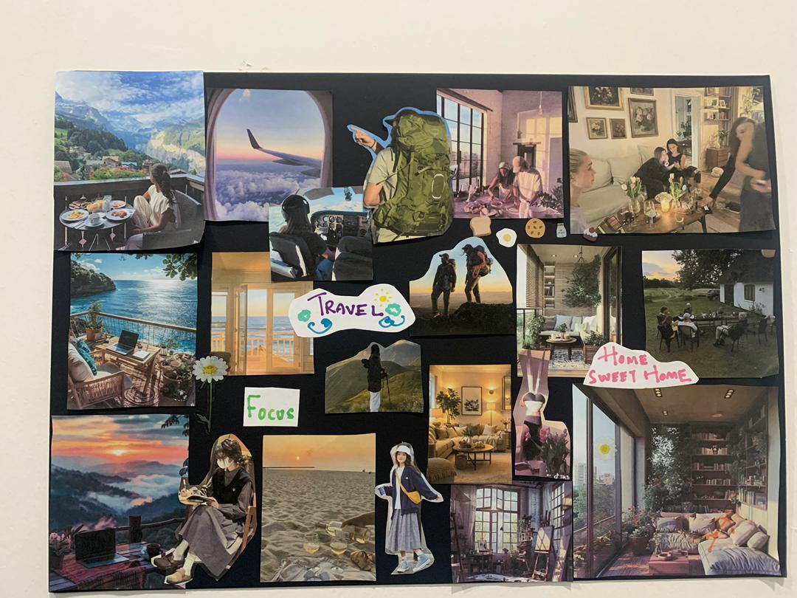

生活和工作
应该分开吗？
Work
Life

里面没有
一个 job title
我要做什么工作？
我想过怎样的生活？
Work
Life
work-life balance
要不要切开？
Work 应该放在 life 的什么位置？
Work is part of life — but it should stay in the right place.
工作不是生活的对面，它本来就在生活里面
Nutrition
starting point
product development
· 现在
food
health
不同的 industry
完全不同的方向 ？
这份工作，
会让我过怎样的生活？
那条线，是不是我自己画的？
21:00
我真的不想处理了……
但是不回不行。
😩
21:00
这个 project 我很在意，
Okay，回一下。
🙂
vs
是我选择的，还是我被迫的？
那个 boundary，要 fit 你现在的生活
work
在 life 里的位置
现在 · 想多学一点、多接触一点
以后 · family、health、travel
我应该找什么工作？
我要不要换工作？
几点以后不要回 message？
Work 和 life 要不要分开？
我到底想过怎样的生活？
I'm not trying to separate work from life.
I'm trying to put work in the right place within my life.
谢谢大家
开场
1 / 9
→ / 空格 下一步 · ← 上一步 · F 全屏
←
⛶
→